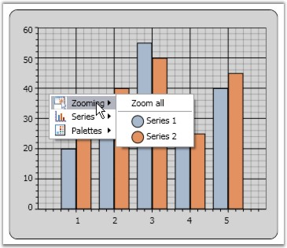
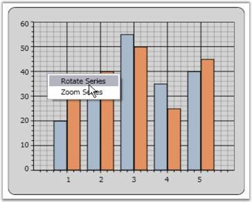

WPF Chart has a built-in context menu which can be enabled by setting the ChartArea.IsContextMenuEnabled property to true. This context menu lets you change the Chart Type of a series and Color Palettes, and enable Zooming.
Default Context Menu
The following code example illustrates how to display the built-in context menu of Chart Area.
|
[XAML]
<syncfusion:Chart > <syncfusion:ChartArea IsContextMenuEnabled="True" /> </syncfusion:Chart> |
|
[C#]
area.IsContextMenuEnabled = true; |

Figure 65: Chart Area Built-In Context Menu
Custom Context Menu
You can also customize the context menu items to display any desired text. The following code example illustrates this.
|
[C#]
ContextMenu contextMenu = new ContextMenu(); contextMenu.Items.Add("Rotate Series"); contextMenu.Items.Add("Zoom Series"); Chart1.Areas[0].ContextMenu = contextMenu; |

Figure 66: Chart Area Custom Context Menu